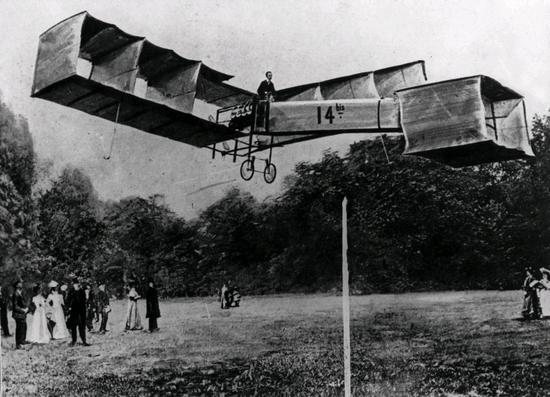
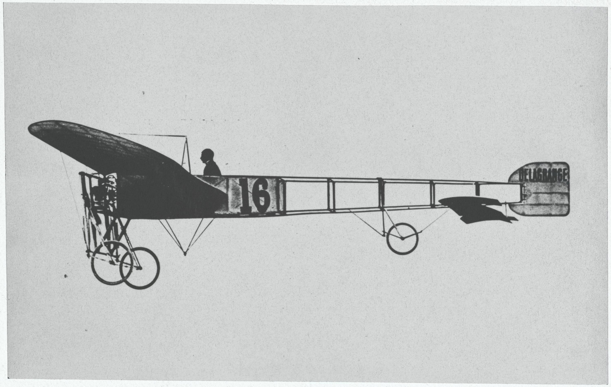
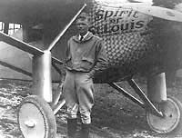
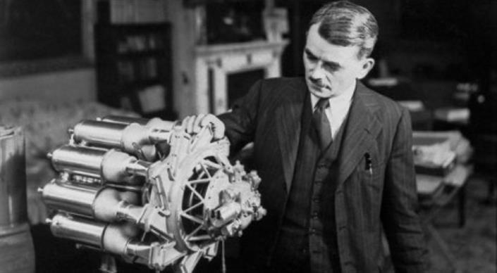
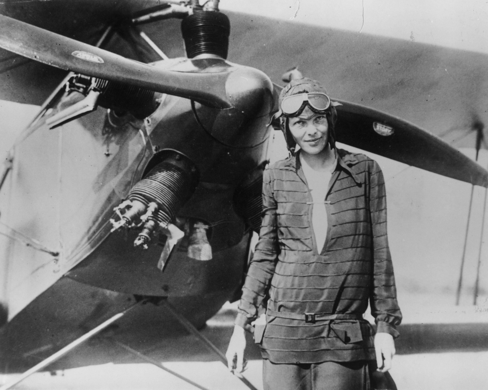
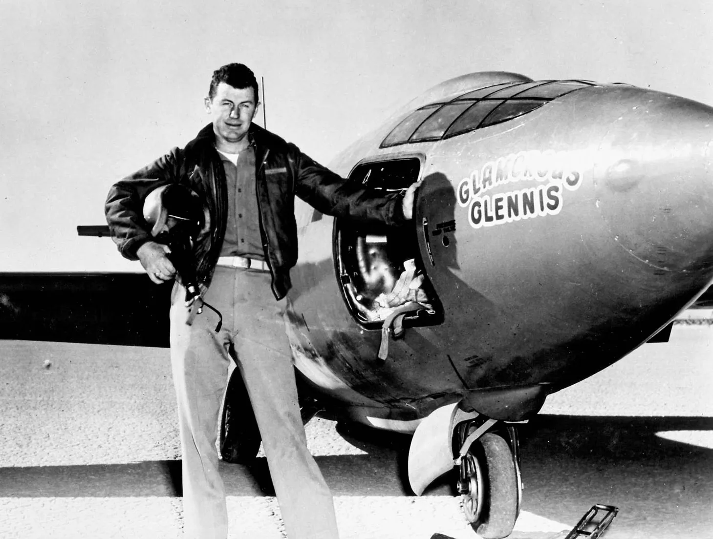
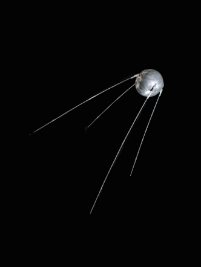
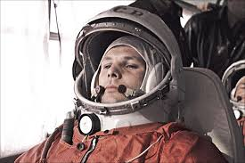
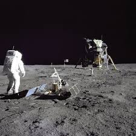

Primul zbor cu motor din Europa - 1906
Alberto Santos-Dumont zboară pentru dată cu un avion care nu era propulsat de un sistem de lansare extern

Primul zbor peste Canalul Mânecii - 1909
Louis Bleriot devine primul om care zboară peste Canalul Mânecii într-un avion cu motor.

Primul zbor peste Atlantic - 1927
Charles A. Lindbergh devine primul om care zboară peste Oceanul Atlantic (peste 3200 km)

Primul motor cu jet - 1930
Frank Whittle inventează primul motor cu jet (motor care generează propulsie prin propulsie)

Prima femeie peste Atlantic - 1932
Amelia Earhart devine prima femeie care zboară peste Oceanul Atlantic.

Primul avion cu viteza sunetului - 1947
Chuck Yeager este primul om care pilotează un avion ce depășește viteza sunetului.

Primul satelit în spațiu - 1957
URSS lansează primul satelit în spațiu, Sputnik 1

Primul om în spațiu
Yuri Gagarin devine primul om în spațiu

Primul om pe lună
Neil A. Armstrong și Edwin E. Aldrin Jr. devin primii oameni pe lună.